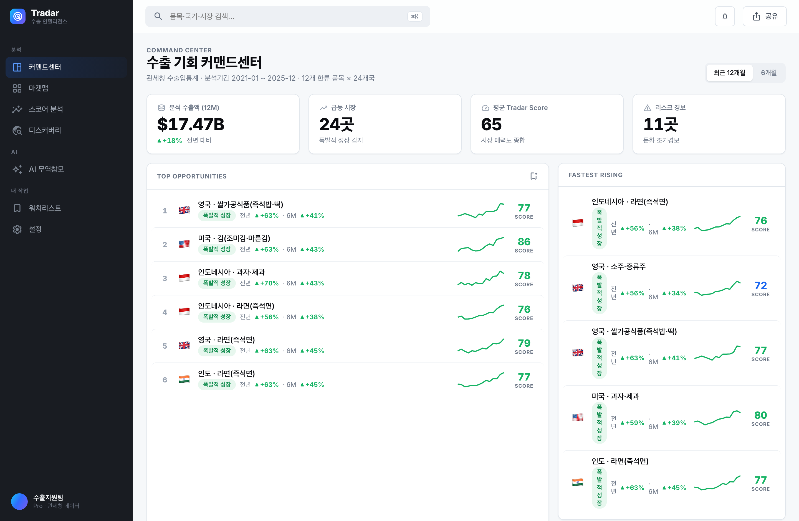
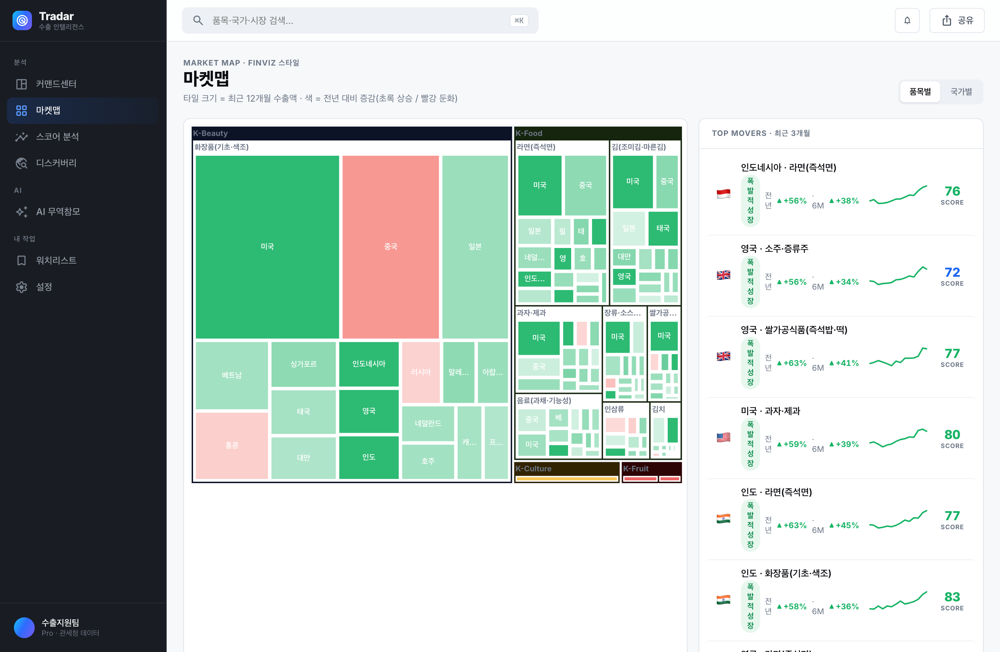
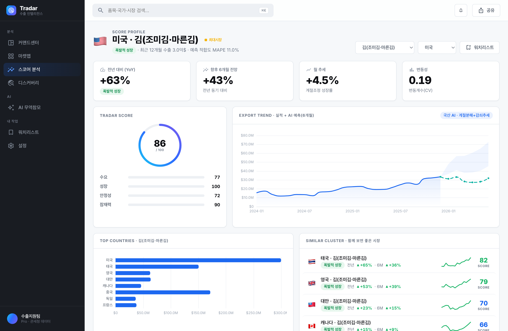

관세 무역데이터와 국산 AI로 K-Food·K-뷰티·K-컬처의 국가별 시장을 Tradar Score로 스코어링하고, 떠오르는 시장을 먼저 포착하는 수출 인텔리전스 플랫폼.
모든 한류 품목×국가 시장을 Tradar Score·모멘텀·예측으로 스코어링합니다. 대기업 시장조사팀 없이도, 데이터로 첫 수출국을 결정하세요.

FINVIZ 스타일 트리맵으로 전 시장을 한 화면에. 크기=수출액, 색=모멘텀으로 뜨는 시장과 식는 시장을 즉시 파악.
수요·성장·안정성·잠재력 4개 축을 종합한 0~100 시장 매력도 스코어와 6개월 AI 수요예측·리스크 조기경보.
“라면 어디에 팔까?” 물으면 실제 수출 수치와 스코어를 근거로 답합니다. 환각 없이, 숫자로.


필수 데이터로 관세청 품목별 국가별 수출입실적(공공데이터포털)을 사용합니다. Tradar Score·수요예측·조기경보는 외산 모델·API 의존 없이 자체 개발한 국산 AI(승법 계절분해+감쇠추세)로 산출하며, AI 상담은 국산 LLM(Solar·HyperCLOVA X) 연동 구조입니다.